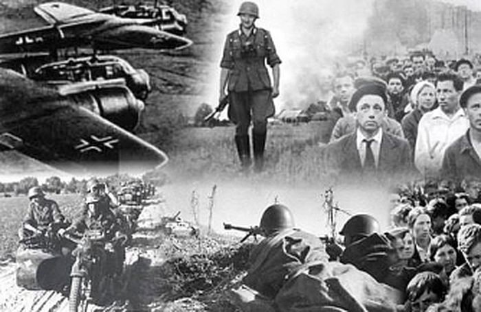

22 июня 1941 года началась Великая Отечественная война. Этот день вошел в календарь как День памяти и скорби. На рассвете 22 июня 1941 года фашистская Германия нанесла первые массированные удары по территории Советского Союза. Вражеская авиация начала бомбить аэродромы, железнодорожные станциaи, военно-морские базы и города вдоль всей западной границы Советского Союза и на глубину до 250–300 километров от нее. Одновременно с артиллерийской атакой войска Люфтваффе бомбили города в Украине, Белоруссии и Прибалтике. На рассвете массированным ударом подверглись ключевые стратегические объекты в Киеве, Житомире, Севастополе. Под бомбами оказались также Брест, Гродно, Лида, Кобрин, Слоним, Барановичи, Шауляй, Вильнюс, Каунас и другие города.
22 июня 1941г.
